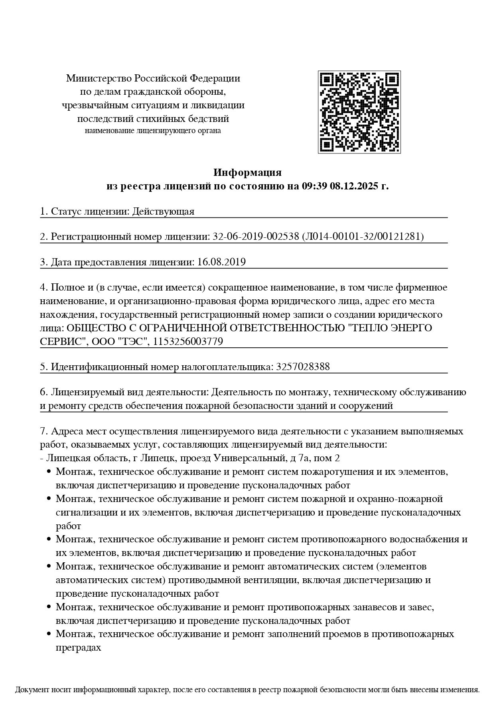
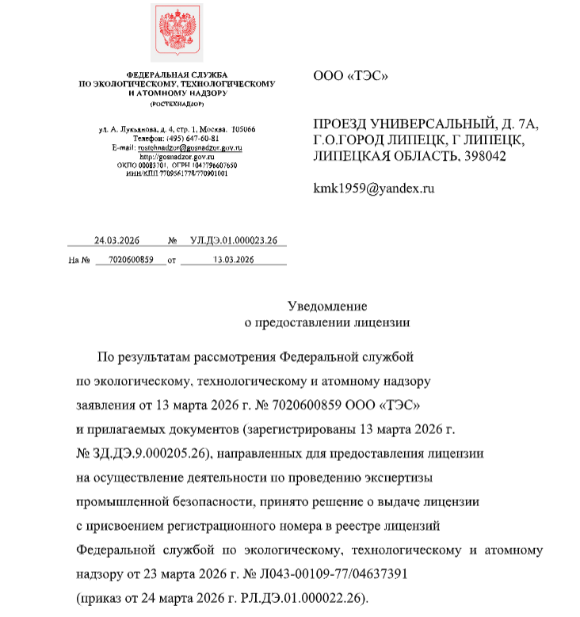
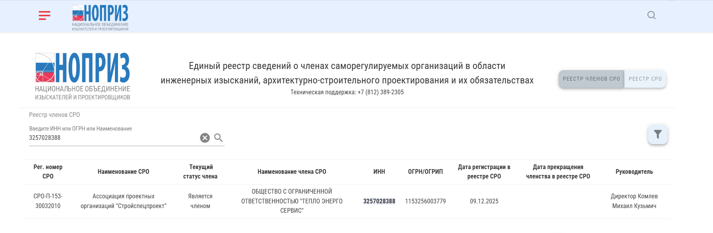

Экспертиза технических устройств, зданий и сооружений, документации и других объектов в области промышленной безопасности.
Экспертиза промышленной безопасности (ЭПБ) — комплекс мероприятий, направленных на оценку соответствия объекта установленным требованиям промышленной безопасности.
В зависимости от вида объекта и поставленной задачи может проводиться экспертиза технических устройств, зданий и сооружений, документации и других объектов, связанных с эксплуатацией опасных производственных объектов.
ООО «Тепло Энерго Сервис» выполняет работы в области промышленной безопасности в Липецке. Состав и порядок работ определяются особенностями объекта и необходимой документацией.
Основные направления работ, которые представлены в деятельности ООО «Тепло Энерго Сервис».
Проведение работ по техническим устройствам, используемым на опасных производственных объектах, с учетом технического состояния оборудования и необходимой документации.
Обследование зданий и сооружений, связанных с объектами промышленной безопасности, с оценкой их технического состояния в рамках выполняемых работ.
Работа с документацией и материалами, связанными с эксплуатацией опасных производственных объектов, в соответствии с поставленной задачей.
Обследование подкрановых путей и оценка их технического состояния в рамках соответствующего вида работ.
Техническое диагностирование позволяет оценить фактическое техническое состояние оборудования и определить возможность его дальнейшей эксплуатации в рамках поставленной задачи.
Объем диагностических мероприятий определяется видом технического устройства, его состоянием, условиями эксплуатации и имеющейся технической документацией.
Необходимость проведения ЭПБ зависит от вида объекта, условий его эксплуатации и требований, применимых к конкретной ситуации.
В случаях, когда требуется оценить возможность дальнейшей эксплуатации объекта.
При необходимости получить информацию о фактическом состоянии технического устройства или сооружения.
В ситуациях, когда изменяются условия или параметры эксплуатации объекта.
Когда для дальнейшей эксплуатации объекта требуется соответствующее оформление результатов проведенных работ.
Конкретный порядок и объем работ определяются особенностями объекта и задачей заказчика.
Обсуждаем объект, его назначение, имеющуюся документацию и необходимый вид работ.
Изучаем предоставленные технические документы и определяем необходимый объем дальнейших мероприятий.
Выполняем предусмотренные работы по обследованию, техническому диагностированию и оценке состояния объекта.
Оформляем результаты выполненных мероприятий в соответствии с задачей и составом работ.
Передаем заказчику результаты выполненных работ и необходимую документацию.
На сайте представлены документы ООО «Тепло Энерго Сервис», подтверждающие соответствующие направления деятельности.



ЭПБ представляет собой комплекс мероприятий по оценке объекта в области промышленной безопасности. Конкретный состав работ зависит от вида объекта и поставленной задачи.
В зависимости от ситуации работы могут относиться к техническим устройствам, зданиям и сооружениям, документации и другим объектам, связанным с эксплуатацией опасных производственных объектов.
Стоимость определяется индивидуально. Она зависит от вида объекта, его технических характеристик, объема документации, сложности обследования и необходимого состава работ.
Перечень документов зависит от объекта и вида экспертизы. После получения информации об объекте можно определить, какие технические и эксплуатационные документы потребуются.
Да. ООО «Тепло Энерго Сервис» осуществляет деятельность в Липецке. Возможность выполнения конкретного вида работ можно уточнить по телефону или электронной почте.
Возможность и состав отдельного технического диагностирования зависят от конкретного объекта и поставленной задачи. Уточнить условия можно после предоставления информации об оборудовании.
Расскажите о вашем объекте и задаче — поможем определить необходимый состав работ.
Получить консультацию
Липецк,
проезд Универсальный, д. 7А